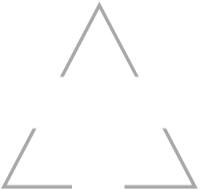
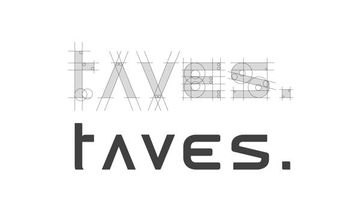

Resume introduces
基本资料
个人爱好
学习经历
技能展示
个人介绍
Resume introduces
姓名：
朱迪
性别：
男
年龄：
20
生日：
1996/09/27
毕业学校：
青岛市职业技术学院
Tel：
17854294137

我的爱好
Mo hobby
玩轮滑
听音乐
看电影
看小说

09-12年
就读于滕东中学
12-15年
就读于滕州市第二中学
15-17年
就读于青岛职业技术学院
JS
90%
H5+CSS3
80%
PS
50%
JQuery
90%
职业技能
个人介绍
责任心强，有自己的独特思维和见解，在不损害团队利益的情况下追求个性，乐观开朗三与表达自己的看法，做事追求完美，善于帮助别人